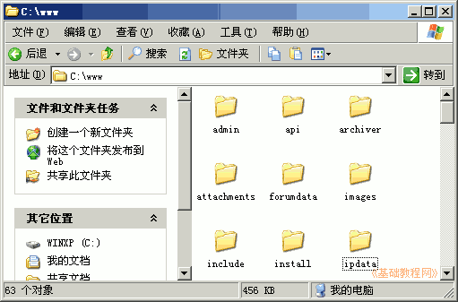

Discuz!论坛安装教程
作者：TeliuTe 来源：基础教程网
这一课我们来安装论坛程序，在服务器上安装网站，下面我们来看一个练习；
1、安装论坛
1）解压下载的论坛安装包，把upload文件夹里的全部内容，都复制到之前设定的d:\www文件夹里；

2）到PhpStudy安装的文件夹里，找到php5文件夹，打开里面的php.ini，检查一下 short_open_tag = On
如果是Off则改成On保存退出，然后到桌面打开phpStudyAdmin，点托盘里的图标，重启Apache；
3）打开IE浏览器，在地址栏输入 http://localhost/install 开始安装，如果本机已经设定了固定ip地址，那么就用ip地址，
在出来的许可协议里点“我同意”；
4）接下来是环境检查，应该都是绿色的勾，点“下一步”继续；
目录文件 所需状态
./config/config_global.php 可写
./config/config_ucenter.php 可写
./config 可写
./data 可写
./data/cache 可写
./data/avatar 可写
./data/plugindata 可写
./data/download 可写
./data/addonmd5 可写
./data/template 可写
./data/threadcache 可写
./data/attachment 可写
./data/attachment/album 可写
./data/attachment/forum 可写
./data/attachment/group 可写
./data/log 可写
./uc_client/data/cache 可写
./uc_server/data/ 可写
./uc_server/data/cache 可写
./uc_server/data/avatar 可写
./uc_server/data/backup 可写
./uc_server/data/logs 可写
./uc_server/data/tmp 可写
./uc_server/data/view 可写
5）接下来安装论坛数据库，数据库用户名是root，密码是root或者是自己修改的，给管理员账号也设定一个密码，点“下一步”继续；
6）经过一阵安装后，出来填写联系方式，这儿可以填写也可以跳过；

7）稍等完成安装，然后会自动跳转到论坛页面；

8）点“登录”用admin登录论坛，以后在浏览器输入 http://localhost，就可以访问，别的机子输入ip地址来访问；
2、Ubuntu 中安装
1）用root用户打开文件管理器，解压upload 里的所有内容到 /opt/lampp/htdocs 原来的xampp文件夹留下也行；
2）打开htdocs/文件夹，除了xampp/文件夹以外，全选里面所有内容，点右键选“属性”，设置“其它”权限为“访问文件和只读”，再点“对包含的文件应用权限”，这是设置全局属性；
3）分别将文件夹 attachments/、forumdata/、install/、uc_client/data/cache/、uc_server/data/ 的属性，设置“其它”权限为“创建删除和读写”，并点击“对包含的文件应用权限”，把文件 config.inc.php 的“其它”权限设为读写；
4）在浏览器地址栏输入http://localhost/install 或者本机的ip 地址，进入安装程序，步骤同上；
5）如果安装过程中出错，根据提示检查文件权限，或者检查xampp的服务是否启动，如果mysql出错可能就要重装xampp，先停止服务，再重装，不行就得重启了再重装；
本节学习了安装Discuz!7.1的基本方法，如果你成功地完成了练习，请继续学习下一课内容；
本教程由86团学校TeliuTe制作|著作权所有
基础教程网：http://teliute.org/
美丽的校园……
转载和引用本站内容，请保留作者和本站链接。